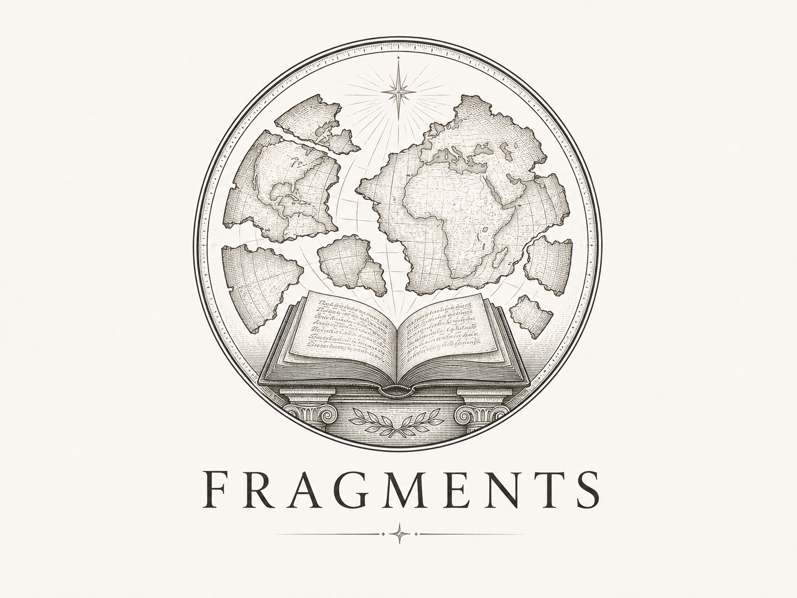

Ma semaine — deux vues, Travail et Bilan, jamais empilées. Le rail de droite ne porte que ce qui sert au moment où l'on est ; le bilan, quand c'est son tour, occupe la grande colonne et s'enroule par compétence.

Ma semaine

Commentaire — Rousseau, Émile Fragments · Argumentation à rendre mer. 10 Commencer Reprise de synthèse
Codex · Synthèse · demandé en plus
dim. 14
Reprendre
Fiche de lecturerendue mardi
fait
Reprise de synthèse
Codex · Synthèse · demandé en plus
dim. 14
Reprendre
Fiche de lecturerendue mardi
fait
Ton bilan s'ouvrira quand tu auras fini ta semaine.
Tu réussis déjà la reprise de thèse.
17 points regardés cette semaine — voir le détail
Quand tu auras fini ta semaine, tu pourras demander un exercice de plus.
Ma semaine
la reprise de thèse — là où tu avais du mal jusqu'ici.
l'ancrage des exemples — c'était pourtant un de tes points forts.
et 1 que tu as demandé en plus.
Tu as fini ta semaine. Si tu veux, tu peux demander un exercice de plus.
‹ Tableau de bordMa semaine
☰
Ton bilan s'ouvrira quand tu auras fini ta semaine.
Reprise de synthèseCodex · demandé en plus
‹ Tableau de bordMa semaine
☰
la reprise de thèse — là où tu avais du mal jusqu'ici.
l'ancrage des exemples — c'était pourtant un de tes points forts.
Pastilles de module posées selon Pastille.tsx — sceau à 88 % du disque, mix-blend-mode:multiply, teintes Fragments #E2E3D2, Codex #DCE6DF. Le 6e nom de compétence (« Lecture ») reste à confirmer.